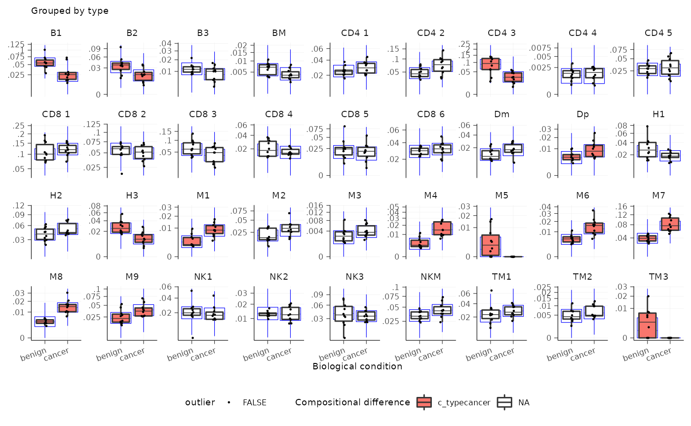
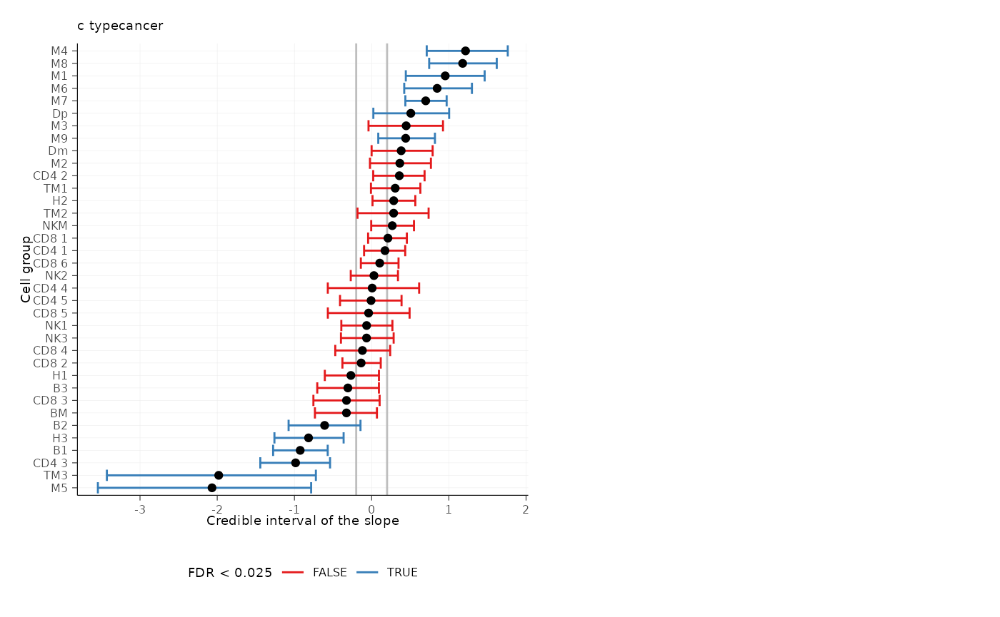
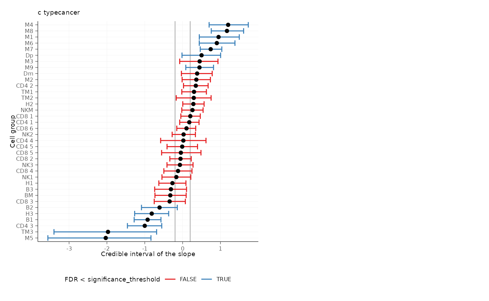
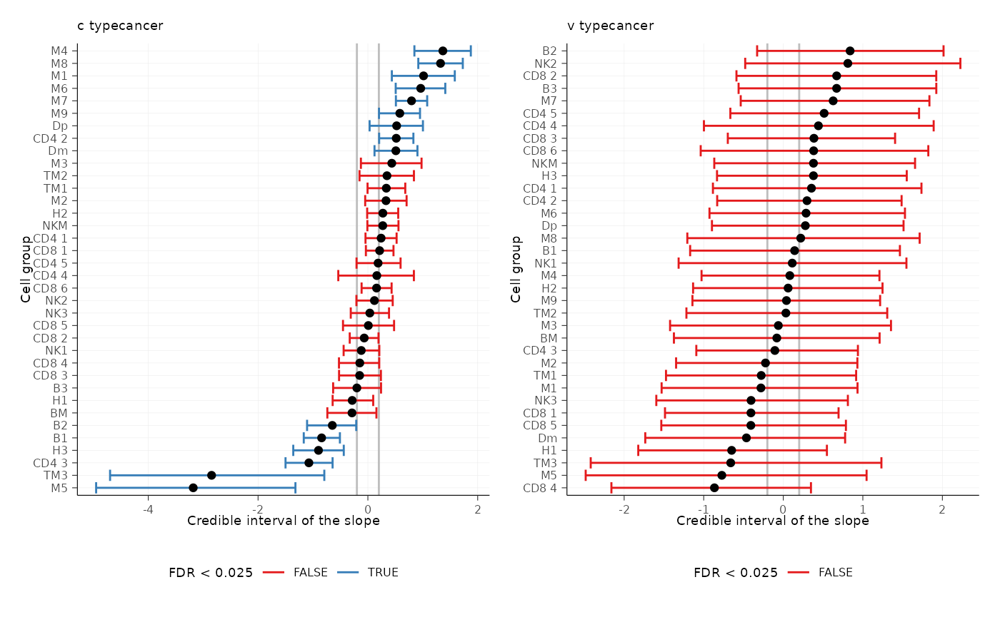
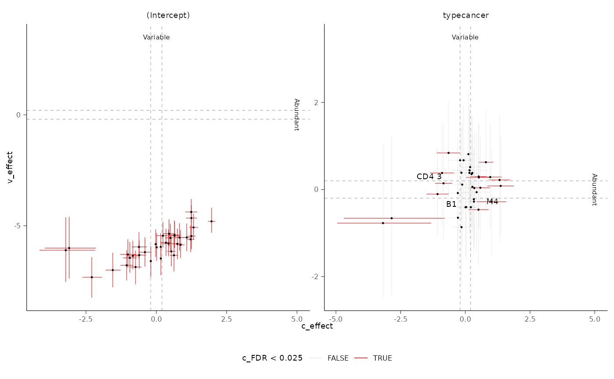

Overview of the sccomp package
Stefano Mangiola
2022-03-10
Source:vignettes/introduction.Rmd
introduction.Rmd

Single-cell transcriptomics allows the unbiased characterisation of the cellular composition of tissues. The cellular composition can be compared between biological or clinical conditions to identify potential cellular drivers. This strategy has been critical to unveil drivers of immune response in cancer and pathogen infection from single-cell data. Developing a robust statistical method for differential composition analyses from single-cell data is crucial for driving discoveries. The compositional data from single-cell experiments has four main properties. The data is in count form; counts underlie inversely correlated proportions that sum to one; larger cell groups are more variable across samples than small groups; real-world data is rich in outlier observation. A model that covers more than two of these properties is currently lacking. Here, we present a robust and outlier-aware method for testing differential tissue composition from single-cell data. This model can also transfer knowledge from a large set of integrated datasets to increase accuracy further. We present how this model can be applied to identify novel compositional and heterogeneity changes in existing studies.
Installation
Bioconductor
if (!requireNamespace("BiocManager")) {
install.packages("BiocManager")
}
BiocManager::install("sccomp")Github
devtools::install_github("stemangiola/sccomp")Analysis
From Seurat Object
res =
seurat_obj |>
formula_composition = ~ type,
formula_variability = ~ 1,
sample,
cell_group
)res =
sce_obj |>
formula_composition = ~ type,
formula_variability = ~ 1,
sample,
cell_group
)From data.frame
res =
seurat_obj[[]] |>
sccomp_glm(
formula_composition = ~ type,
formula_variability = ~ 1,
sample,
cell_group
)From counts
res =
counts_obj |>
sccomp_glm(
formula_composition = ~ type,
formula_variability = ~ 1,
.sample = sample,
.cell_group = cell_group,
.count = count
)## sccomp says: outlier identification first pass - step 1/3 [ETA: ~20s]## sccomp says: outlier identification second pass - step 2/3 [ETA: ~60s]## sccomp says: outlier-free model fitting - step 3/3 [ETA: ~20s]## sccomp says: the composition design matrix has columns: (Intercept), typecancer## sccomp says: the variability design matrix has columns: (Intercept)
res## # A tibble: 72 × 9
## cell_group parameter covariate c_lower c_effect c_upper c_pH0 c_FDR
## <chr> <chr> <chr> <dbl> <dbl> <dbl> <dbl> <dbl>
## 1 B1 (Intercept) NA 0.544 0.702 0.862 0 0
## 2 B1 typecancer type -1.20 -0.893 -0.590 0 0
## 3 B2 (Intercept) NA 0.114 0.367 0.622 0.0925 0.00429
## 4 B2 typecancer type -1.11 -0.624 -0.159 0.0373 0.00489
## 5 B3 (Intercept) NA -0.606 -0.417 -0.208 0.0208 0.00114
## 6 B3 typecancer type -0.581 -0.204 0.171 0.491 0.137
## 7 BM (Intercept) NA -1.33 -1.11 -0.890 0 0
## 8 BM typecancer type -0.754 -0.341 0.0581 0.235 0.0668
## 9 CD4 1 (Intercept) NA 0.349 0.483 0.617 0 0
## 10 CD4 1 typecancer type -0.0757 0.166 0.402 0.615 0.193
## # … with 62 more rows, and 1 more variable: count_data <list>Visualise data + inference
plots = plot_summary(res) ## Joining, by = c("sample", "cell_group")
## Joining, by = c("cell_group", "type")## Warning: Ignoring unknown aesthetics: labelPlot of group proportion, faceted by groups. The blue boxplots represent the posterior predictive check. If the model is likely be descriptively adequate to the data, the blue boxplot should roughly overlay with the black boxplot, which represent the observed data. The outliers are coloured in red.
plots$boxplot## [[1]]
Plot of estimates of differential composition (c_) on the x axis, and differential variability (v_) on the y axis. The error bars represent 95% credible intervals. The dashed lines represent the minimal effect that the hypothesis test is based on. An effect is labelled as significant if bigger than the minimal effect according to the 95% credible interval. Facets represent the covariates in the model.
plots$credible_intervals_1D
Visualisation of the MCMC chains from the posterior distribution
It is possible to directly evaluate the posterior distribution. In this example we plot the Monte Carlo chain for the slope parameter of the first cell type. We can see that has converged and is negative with probability 1.

Differential variability
We can model the cell-group variability also dependent on type, and so test differences in variability
res =
counts_obj |>
sccomp_glm(
formula_composition = ~ type,
formula_variability = ~ type,
.sample = sample,
.cell_group = cell_group,
.count = count
)## sccomp says: outlier identification first pass - step 1/3 [ETA: ~20s]## sccomp says: outlier identification second pass - step 2/3 [ETA: ~60s]## sccomp says: outlier-free model fitting - step 3/3 [ETA: ~20s]## sccomp says: the composition design matrix has columns: (Intercept), typecancer## sccomp says: the variability design matrix has columns: (Intercept), typecancer
res## # A tibble: 72 × 14
## cell_group parameter covariate c_lower c_effect c_upper c_pH0 c_FDR
## <chr> <chr> <chr> <dbl> <dbl> <dbl> <dbl> <dbl>
## 1 B1 (Intercept) NA 0.584 0.748 0.912 0 0
## 2 B1 typecancer type -1.17 -0.843 -0.510 0 0
## 3 B2 (Intercept) NA 0.235 0.453 0.674 0.0132 0.000786
## 4 B2 typecancer type -1.11 -0.648 -0.212 0.0220 0.00320
## 5 B3 (Intercept) NA -0.617 -0.404 -0.172 0.0347 0.00196
## 6 B3 typecancer type -0.633 -0.201 0.240 0.498 0.146
## 7 BM (Intercept) NA -1.28 -1.05 -0.825 0 0
## 8 BM typecancer type -0.738 -0.289 0.155 0.350 0.107
## 9 CD4 1 (Intercept) NA 0.387 0.531 0.683 0 0
## 10 CD4 1 typecancer type -0.0432 0.241 0.523 0.379 0.118
## # … with 62 more rows, and 6 more variables: v_lower <dbl>, v_effect <dbl>,
## # v_upper <dbl>, v_pH0 <dbl>, v_FDR <dbl>, count_data <list>Plot 1D significance plot
plots = plot_summary(res)## Joining, by = c("sample", "cell_group")
## Joining, by = c("cell_group", "type")## Warning: Ignoring unknown aesthetics: label
plots$credible_intervals_1D
Plot 2D significance plot. This is possible if only differential variability has been tested
plots$credible_intervals_2D
## R version 4.1.2 (2021-11-01)
## Platform: x86_64-pc-linux-gnu (64-bit)
## Running under: Ubuntu 20.04.3 LTS
##
## Matrix products: default
## BLAS/LAPACK: /usr/lib/x86_64-linux-gnu/openblas-pthread/libopenblasp-r0.3.8.so
##
## locale:
## [1] LC_CTYPE=en_US.UTF-8 LC_NUMERIC=C
## [3] LC_TIME=en_US.UTF-8 LC_COLLATE=en_US.UTF-8
## [5] LC_MONETARY=en_US.UTF-8 LC_MESSAGES=en_US.UTF-8
## [7] LC_PAPER=en_US.UTF-8 LC_NAME=C
## [9] LC_ADDRESS=C LC_TELEPHONE=C
## [11] LC_MEASUREMENT=en_US.UTF-8 LC_IDENTIFICATION=C
##
## attached base packages:
## [1] stats graphics grDevices utils datasets methods base
##
## other attached packages:
## [1] rstan_2.21.3 StanHeaders_2.21.0-7 tidyr_1.2.0
## [4] forcats_0.5.1 ggplot2_3.3.5 sccomp_0.99.20
## [7] dplyr_1.0.8 BiocStyle_2.22.0
##
## loaded via a namespace (and not attached):
## [1] bitops_1.0-7 matrixStats_0.61.0
## [3] fs_1.5.2 RColorBrewer_1.1-2
## [5] rprojroot_2.0.2 GenomeInfoDb_1.30.1
## [7] tools_4.1.2 bslib_0.3.1
## [9] utf8_1.2.2 R6_2.5.1
## [11] BiocGenerics_0.40.0 colorspace_2.0-3
## [13] withr_2.5.0 tidyselect_1.1.2
## [15] gridExtra_2.3 prettyunits_1.1.1
## [17] processx_3.5.2 compiler_4.1.2
## [19] textshaping_0.3.6 cli_3.2.0
## [21] Biobase_2.54.0 desc_1.4.1
## [23] DelayedArray_0.20.0 labeling_0.4.2
## [25] bookdown_0.24 sass_0.4.0
## [27] scales_1.1.1 readr_2.1.2
## [29] callr_3.7.0 pkgdown_2.0.2.9000
## [31] systemfonts_1.0.4 stringr_1.4.0
## [33] digest_0.6.29 rmarkdown_2.12
## [35] XVector_0.34.0 pkgconfig_2.0.3
## [37] htmltools_0.5.2 MatrixGenerics_1.6.0
## [39] highr_0.9 fastmap_1.1.0
## [41] rlang_1.0.2 farver_2.1.0
## [43] jquerylib_0.1.4 generics_0.1.2
## [45] jsonlite_1.8.0 inline_0.3.19
## [47] RCurl_1.98-1.6 magrittr_2.0.2
## [49] GenomeInfoDbData_1.2.7 loo_2.4.1
## [51] patchwork_1.1.1 Matrix_1.4-0
## [53] Rcpp_1.0.8 munsell_0.5.0
## [55] S4Vectors_0.32.3 fansi_1.0.2
## [57] lifecycle_1.0.1 stringi_1.7.6
## [59] yaml_2.3.5 SummarizedExperiment_1.24.0
## [61] zlibbioc_1.40.0 pkgbuild_1.3.1
## [63] grid_4.1.2 parallel_4.1.2
## [65] ggrepel_0.9.1 crayon_1.5.0
## [67] lattice_0.20-45 hms_1.1.1
## [69] knitr_1.37 ps_1.6.0
## [71] pillar_1.7.0 GenomicRanges_1.46.1
## [73] boot_1.3-28 codetools_0.2-18
## [75] stats4_4.1.2 rstantools_2.1.1
## [77] glue_1.6.2 evaluate_0.15
## [79] SeuratObject_4.0.4 BiocManager_1.30.16
## [81] RcppParallel_5.1.5 vctrs_0.3.8
## [83] tzdb_0.2.0 gtable_0.3.0
## [85] purrr_0.3.4 cachem_1.0.6
## [87] xfun_0.30 ragg_1.2.2
## [89] SingleCellExperiment_1.16.0 tibble_3.1.6
## [91] memoise_2.0.1 IRanges_2.28.0
## [93] ellipsis_0.3.2